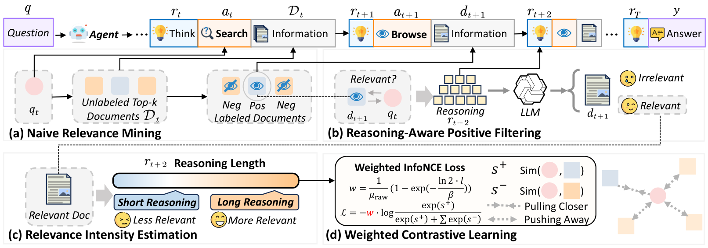
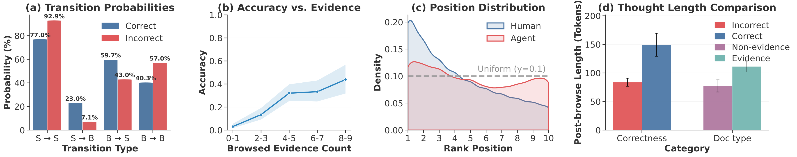
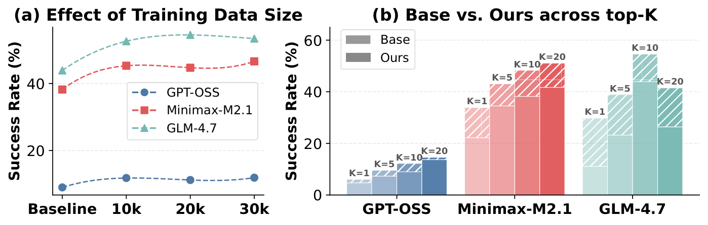
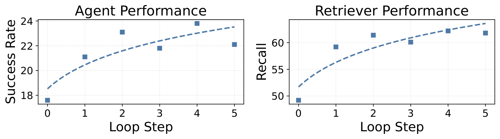

Naive relevance mining
Browsed documents serve as coarse positives, while unbrowsed retrieved documents provide clean trajectory-aware negatives.
Information retrieval systems have traditionally been designed and trained for human users, with learning-to-rank methods relying heavily on large-scale human interaction logs such as clicks and dwell time. With the rapid emergence of large language model powered search agents, retrieval is increasingly consumed by agents rather than human beings, and is embedded as a core component within multi-turn reasoning and action loops. In this setting, retrieval models trained under human-centric assumptions exhibit a fundamental mismatch with the way agents issue queries and consume results.
LRAT introduces learning to retrieve from agent trajectories as a new training paradigm, where supervision is derived from multi-step agent interactions. In our instantiation, Tongyi-DeepResearch-30B is deployed on 10K InfoSeekQA queries with four retrievers, yielding 26,482 agent trajectories and 91,713 training pairs. Experiments on both in-domain and out-of-domain deep research benchmarks show consistent gains in evidence recall, end-to-end task success, and execution efficiency across diverse agent architectures and retriever backbones.
LRAT consistently improves task success, evidence recall, and step efficiency across both specialized search agents and generalist agentic foundation models.
| Agent Backbone | Retriever | InfoSeek-Eval (ID) | BrowseComp-Plus (OOD) | |||
|---|---|---|---|---|---|---|
| SR | Avg. Steps | SR | Recall | Avg. Steps | ||
| I. Task-Optimized Search Agents | ||||||
| AgentCPM-Explore (4B) | Qwen3-Emb | 40.3 | 38.0 | 13.5 | 23.2 | 40.7 |
| + LRAT (Ours) | 55.7 | 34.4 | 15.8 | 32.0 | 40.4 | |
| E5-Large | 47.3 | 38.9 | 15.9 | 26.5 | 40.7 | |
| + LRAT (Ours) | 49.7 | 35.5 | 15.9 | 32.1 | 40.1 | |
| WebExplore (8B) | Qwen3-Emb | 52.0 | 24.1 | 21.0 | 47.7 | 40.7 |
| + LRAT (Ours) | 68.7 | 19.0 | 27.2 | 55.9 | 38.7 | |
| E5-Large | 60.0 | 23.8 | 25.4 | 50.4 | 40.1 | |
| + LRAT (Ours) | 63.3 | 20.2 | 29.0 | 56.1 | 39.1 | |
| Tongyi-DeepResearch (30B) | Qwen3-Emb | 52.7 | 26.7 | 17.8 | 49.2 | 42.9 |
| + LRAT (Ours) | 68.0 | 20.7 | 23.7 | 60.7 | 41.0 | |
| E5-Large | 56.7 | 25.1 | 20.7 | 54.8 | 42.4 | |
| + LRAT (Ours) | 68.0 | 21.5 | 23.9 | 61.8 | 41.4 | |
| II. Generalist Agentic Foundation Models | ||||||
| GPT-OSS (120B) | Qwen3-Emb | 40.0 | 34.9 | 9.0 | 43.7 | 45.4 |
| + LRAT (Ours) | 47.0 | 30.5 | 12.1 | 56.4 | 45.2 | |
| E5-Large | 41.7 | 33.9 | 10.8 | 50.1 | 44.8 | |
| + LRAT (Ours) | 50.7 | 29.7 | 13.1 | 56.0 | 44.6 | |
| MiniMax-M2.1 (229B) | Qwen3-Emb | 58.7 | 21.4 | 38.2 | 57.2 | 30.8 |
| + LRAT (Ours) | 78.3 | 14.7 | 48.3 | 69.2 | 28.3 | |
| E5-Large | 64.0 | 18.9 | 46.4 | 64.9 | 29.1 | |
| + LRAT (Ours) | 75.0 | 14.8 | 48.7 | 69.7 | 28.9 | |
| GLM-4.7 (358B) | Qwen3-Emb | 67.7 | 27.5 | 43.9 | 66.6 | 45.5 |
| + LRAT (Ours) | 82.0 | 18.5 | 54.6 | 77.8 | 44.6 | |
| E5-Large | 73.7 | 24.2 | 46.4 | 68.7 | 44.6 | |
| + LRAT (Ours) | 81.7 | 19.5 | 50.6 | 76.3 | 44.8 | |

Browsed documents serve as coarse positives, while unbrowsed retrieved documents provide clean trajectory-aware negatives.
Post-browse reasoning traces are used to remove browsed-but-not useful documents from the positive set.
Reasoning length is converted into a soft utility weight that captures how strongly a document contributes to progress.
Final optimization uses weighted contrastive learning to align the retriever with agent-style search behavior.


Trajectory-trained dense retriever based on Qwen3-Embedding-0.6B.
Model CardTrajectory-trained dense retriever based on multilingual-e5-large-instruct.
Model CardTraining dataset built from deep research agent trajectories for retriever supervision.
Dataset Card
@article{zhou2026lrat,
title={Learning to Retrieve from Agent Trajectories},
author={Zhou, Yuqi and Dai, Sunhao and Qu, Changle and Pang, Liang and Xu, Jun and Wen, Ji-Rong},
year={2026}
}